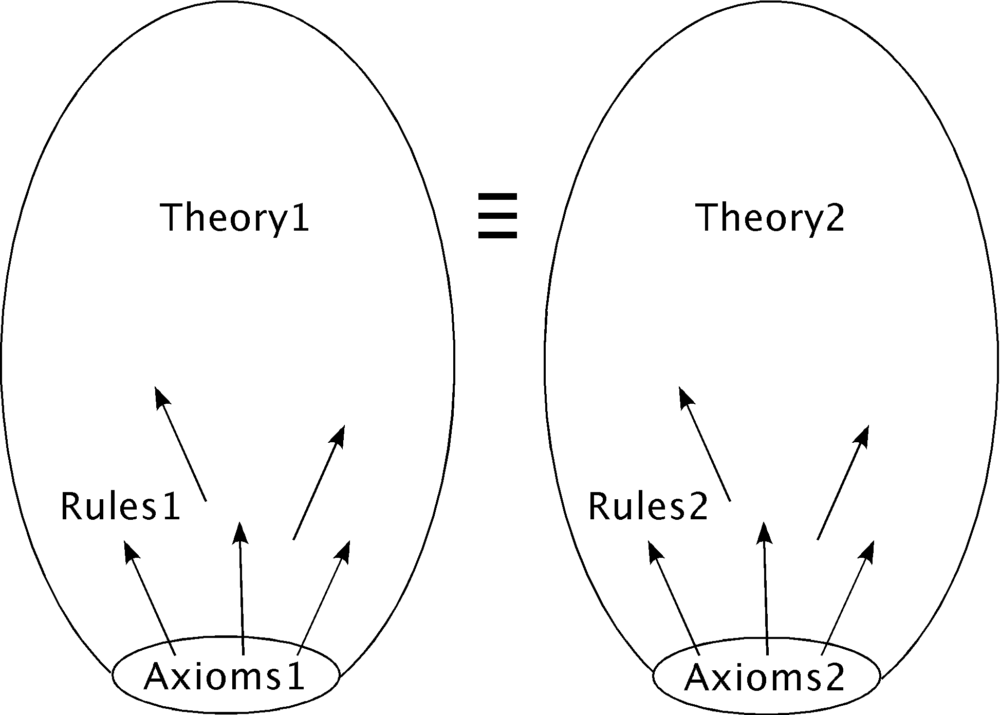

What is Proved

From What to What
- Provide the "from" system as 1st order axioms
- Provide each axiom and rule of the "to" system as conjectures
- HELP! Do the rules have to be proved?
TPTP Files
- Take advantage of TPTP's multiple conjecture semantics
- Example:
S5=S1-0M6S3M9B_to_S5=KM5.p
- Submit via SystemOnTPTP
- Generally, definitional approach makes life harder for ATP
- Proving a defined name from the same axiom is trivial